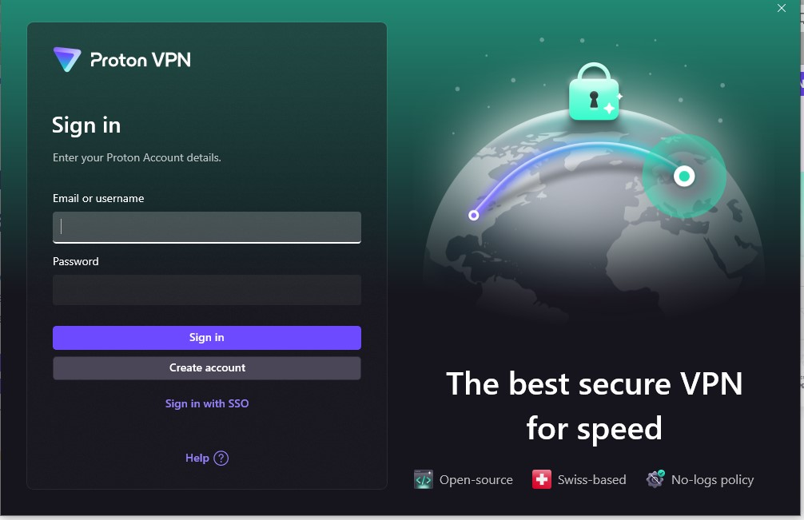
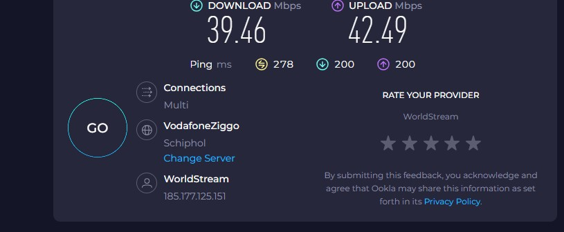
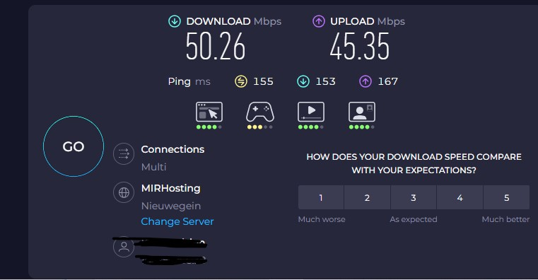

Working with VPN
Objective: Understand the role of VPNs in protecting privacy and secure communication.
Tools: Free VPN client (ProtonVPN free tier)
Step 1. Choose a reputable free VPN service and sign up. - Proton VPN
Step 2. Download and insta l the VPN client.

Step 3. Connect to a VPN server

Step 4.Verify your IP address has changed (use whatismyipaddress.com).
IP Details For: 185.177.125.151
Country:Netherlands
State/Region:Zuid-Holland
Step 5. Browse a website to confirm traffic is encrypted. - The browser shows the secure-connection padlock and the web address s begin with https:// ie.the "s" stands for "secure" and confirms that the site uses an SSL/TLS certificate.
6.Disconnect VPN and compare browsing speed and IP
The speed with vpn = 42.49Mbps
The speed without vpn = 50.26Mbps


VPN adds some latency or slight speed reduction because the server is far away or under heavy load.
7.Research VPN encryption and privacy features.
Encryption & protocols
- Good VPNs use strong encryption (e.g., AES-256) and secure protocols like OpenVPN, WireGuard, IKEv2. For example, Proton VPN lists encryption, no-logs policy, DNS leak protection among its features.
- Some free VPNs also support modern protocol WireGuard which tends to offer better speed + security.
Privacy & logging
- A trusted VPN will have a no-logs policy, meaning it does not store your browsing activity. Proton claims “no logs of user activity.”
- Jurisdiction matters (where the VPN company is based), because local laws affect data retention. Some services highlight being under favorable privacy-friendly jurisdiction.
- Beware: many free VPNs are less trustworthy. According to research, over 84 % of some free mobile VPNs leaked IP or DNS information.
Additional features
- Kill-switch: stops traffic if VPN connection drops.
- Split tunneling: choose which apps go via VPN vs direct.
- Server selection: number of countries/locations. Free plans often limit this.
- Data limits / speed limits: Free plans frequently restrict data or throttle speeds.
Risks and limitations of free VPNs
- They may limit server locations, data, speed.
- Some free VPNs monetize via ads, tracking or selling user data. Researchers warn many free VPNs are a “privacy nightmare.”
- Free providers may lack advanced privacy features available in paid versions.
Benefits of using a VPN
- Hides your IP address and makes it appear you are browsing from another location (helps with privacy, geo-location, avoiding some regional restrictions).
- Encrypts your internet traffic between your device and the VPN server, making it much harder for network-observers (e.g., cafés WiFi, ISPs, public hotspots) to snoop your data.
- Adds a layer of security especially when using unsecured networks (public WiFi) or working remotely.
- Can help bypass some content restrictions or censorship (depending on the server location and policy).
- For free users, it can still provide decent privacy if you pick a reputable provider.
Limitations of using a VPN
- Speed/latency impact: Because your traffic is routed via an extra server, and encrypted, you may see slower performance, especially if the server is geographically far or overloaded.
- Server / data / location restrictions (free plans): Free VPNs often restrict the number of server locations, limit monthly data, or throttle speed.
- Not full anonymity: A VPN masks your IP and encrypts traffic, but it doesn’t make you anonymous by itself. Activities such as logging into an identity-linked account, browser fingerprinting, or cookies can still track you.
- Trust & provider risk: You must trust your VPN provider. If they log your activity, have weak security, or supply poor infrastructure, your data may still be at risk. Free VPNs are especially risky if they monetize via data or ads.
- Legal/regulatory concerns: In some countries, VPN use is restricted or monitored. Also, using a VPN doesn’t make illicit activity legal